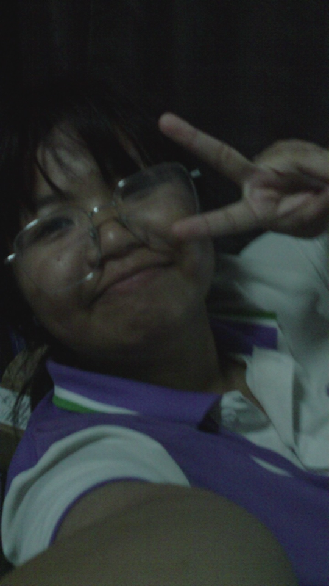

About Me
A little about me

HELLO THERE!
VIEW MY WORK →
I'm Kannika.
แนะนำตัวตนของฉัน
แม้ว่าดิฉันจะเรียนอยู่ในสายการเรียนภาษาจีนแต่สิ่งที่ดิฉันสนใจจริง ๆ คือจิตวิทยา
ดิฉันเป็นคนที่ชอบรับฟังผู้อื่น เข้าใจความรู้สึก และพยายามมองสิ่งต่าง ๆ จากมุมมองของคนอื่น
โดยมีEmpathyเป็นหนึ่งในจุดแข็งของดิฉันในขณะเดียวกันดิฉันก็ชอบเรียนรู้เรื่องเทคโนโลยี
สามารถเรียนรู้สิ่งใหม่ ๆ ได้ค่อนข้างเร็ว
NAME
นางสาวกัณณิกา สำอางค์ ชื่อเล่น : ฝ้าย
INTEREST
ด้านการรักษาสุขภาพจิต , การประกอบเคสคอมพิวเตอร์
HOBBY
ฟังเพลง / ฟังพอดแคสต์ประวัติศาสตร์โลก/คดีฆตก
EDUCATION
⠀ ⠀ ⠀
ระดับชั้นอนุบาล 1-3 : โรงเรียนวัฒนดรุณวิทย์
ประถมศึกษา 1-6 : โรงเรียนวัฒนดรุณวิทย์
มัธยมศึกษาตอนต้น 1-3 : โรงเรียนบ้านบึง"อุตสาหกรรมนุเคราะห์"
มัธยมศึกษาตอนปลาย 4-6 : โรงเรียนบ้านบึง"อุตสาหกรรมนุเคราะห์"
⠀ ⠀ ⠀
ระดับชั้นอนุบาล 1-3 : โรงเรียนวัฒนดรุณวิทย์
ประถมศึกษา 1-6 : โรงเรียนวัฒนดรุณวิทย์
มัธยมศึกษาตอนต้น 1-3 : โรงเรียนบ้านบึง"อุตสาหกรรมนุเคราะห์"
มัธยมศึกษาตอนปลาย 4-6 : โรงเรียนบ้านบึง"อุตสาหกรรมนุเคราะห์"
⠀ ⠀ ⠀